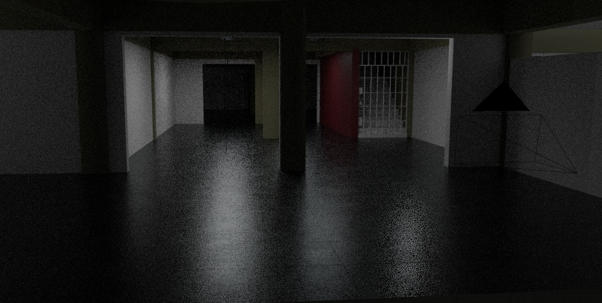
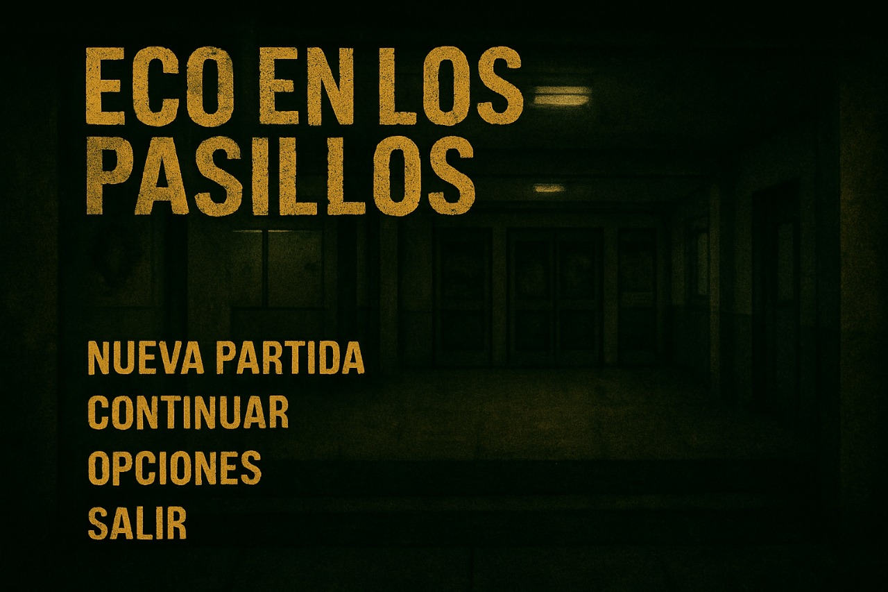

Eco en los Pasillos


Eco en los Pasillos es un juego indie de suspenso y supervivencia, desarrollado como proyecto final de 7mo año en la Escuela Técnica N°3 “Victor Mercante”.
Al ingresar al colegio con tus amigos, todos terminan en lugares distintos. Podés elegir buscarlos y escapar juntos, o irte solo dejándolos atrás.